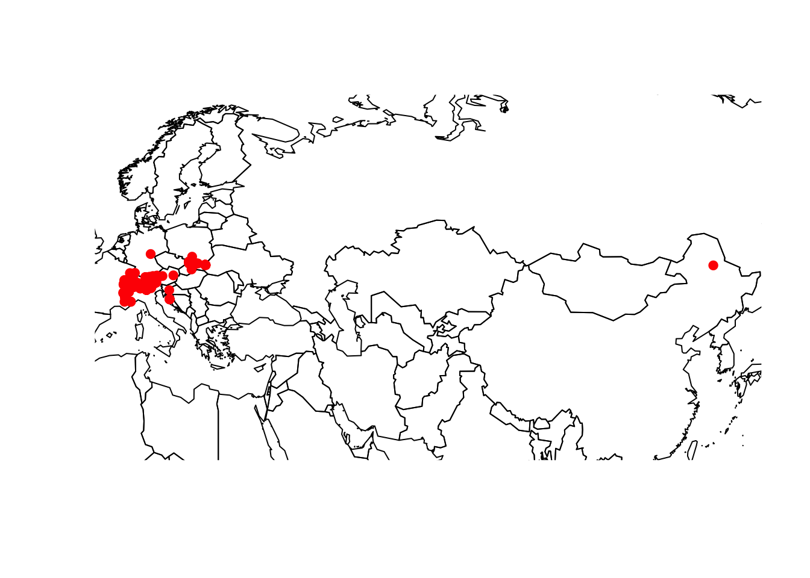
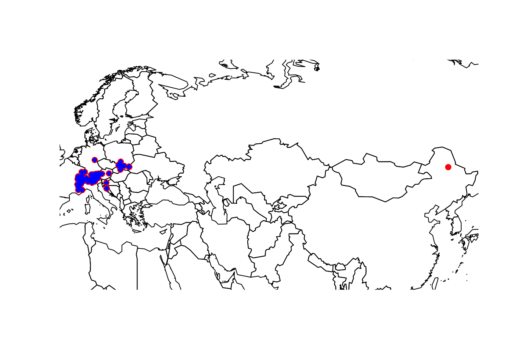
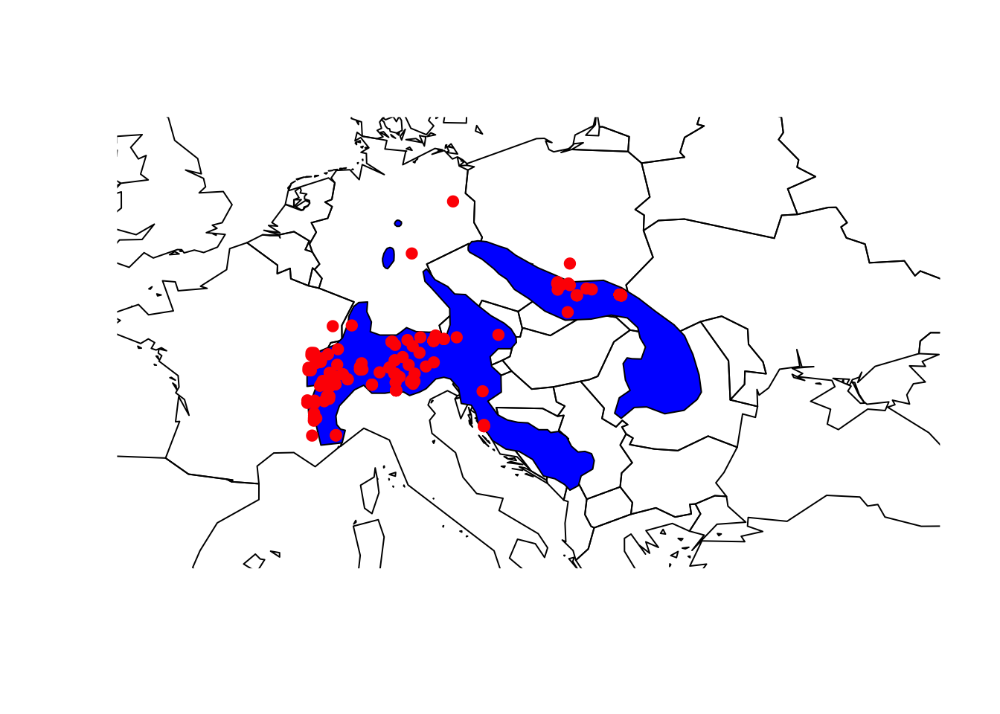
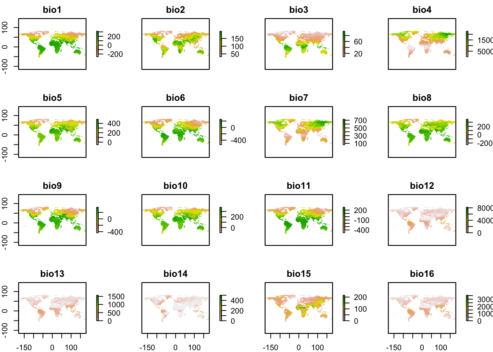

Biodiversity and environmental data
Before we start into this series of practicals, you should spend a minute thinking about your folder structures. I recommend having separate folders for your R scripts and for your data, potentially also a results folder. Today, we will learn about different kinds of data we need for biodiversity modelling and will download different data. For improved overview, you may consider to make different subfolder within your data folder to structure this further.
1 Biodiversity data
Many different types of biodiversity data exist, e.g. from standardised monitoring schemes, citizen science platforms, or expert knowledge. Each comes with own challenges. Here, we simply want to learn how we can obtain and process representative types of biodiversity data. Today, we will mainly deal with publicly available data, in particular occurrence records from GBIF and expert range maps from the IUCN.
1.1 GBIF point records
GBIF stands for Global Biodiversity Information Facility. GBIF defines itself as “an international network and research infrastructure funded by the world’s governments and aimed at providing anyone, anywhere, open access to data about all types of life on Earth”. GBIF contains worldwide point records from observations as well as museum records or other contributions. The data are thus not standardised and often it is unclear which spatial resolution the data represent. To understand this, let’s look at some example under https://www.gbif.org/.
1.1.1 Downloading gbif records
We will use the package rgbif to search and retrieve data from GBIF. A good tutorial to this package is offered here. Remember that we can install new packages with the function install.packages(). Alternatively, the dismo package offer the function gbif() to download gbif records. Robert Hijmans, who wrote the raster and the dismo package, also offers great tutorials on his website: http://rspatial.org.
library(rgbif)
# Check out the number of occurrences found in GBIF:
occ_count()## Registered S3 method overwritten by 'crul':
## method from
## as.character.form_file httr## [1] 1349472737# number of observations:
occ_count(basisOfRecord='OBSERVATION')## [1] 19662024# number of occurrences reported for Germany:
occ_count(country=isocodes[grep("Germany", isocodes$name), "code"])## [1] 37830799# number of observations reported for Germany:
occ_count(country=isocodes[grep("Germany", isocodes$name), "code"],basisOfRecord='OBSERVATION')## [1] 299490As example, I picked the Alpine shrew (Sorex alpinus) for today, a small mammal species occurring in Central and Suuth-Eastern European mountain ranges. Its conservation status is near threatened (Link to IUCN redlist).

Figure 1. The Alpine shrew (Sorex alpinus). Picture by Dr. Richard Kraft, downloaded from https://kleinsaeuger.at/sorex-alpinus.html.
We first check whether any synonyms exist and how many records exist for the species. Download will be slow for high numbers of records.
# Check for synonyms
name_suggest(q='Sorex alpinus', rank='species')
# Check number of records
occ_search(scientificName = "Sorex alpinus", limit = 10)Now, let’s download the records and plot them. Of course, the map will only help us judging the data quality if we have a rough idea where the species should occur. So, look up the species on the web first!
gbif_shrew <- occ_search(scientificName = "Sorex alpinus",return='data', limit=500)
library(maptools)## Loading required package: sp## Checking rgeos availability: TRUEdata(wrld_simpl)
plot(wrld_simpl,xlim=c(5,130), ylim=c(40,55))
points(gbif_shrew$decimalLongitude, gbif_shrew$decimalLatitude, col='red', pch=19)
1.1.2 Cleaning and cross-checking gbif data
You should always critically assess the quality of your data. This also holds true for GBIF data. Look at the map again, do all records look plausible?
Not all coordinates seem to be correct, and we thus need to cross-check these. Robert Hijmans provides some code in his dismo tutorials. We will here use the new package CoordinateCleaner (Zizka et al. (2019); see tutorials here). The function clean_coordinates() allows cleaning geographic coordinates using different cross-checks. Here, we first compare whether the coordinates for each entry match the country code provided for each entry and are no outliers.
library(CoordinateCleaner)
gbif_shrew <- subset(gbif_shrew, !is.na(decimalLatitude))
cl_gbif_shrew <- clean_coordinates(gbif_shrew, lon="decimalLongitude", lat="decimalLatitude", countries="countryCode", tests=c("centroids","outliers"))## Testing coordinate validity## Flagged 0 records.## Testing country centroids## Flagged 2 records.## Testing geographic outliers## Flagged 1 records.## Flagged 3 of 230 records, EQ = 0.01.plot(wrld_simpl,xlim=c(5,130), ylim=c(40,55))
points(gbif_shrew$decimalLongitude, gbif_shrew$decimalLatitude, col='red', pch=19)
points(gbif_shrew$decimalLongitude[cl_gbif_shrew$.summary], gbif_shrew$decimalLatitude[cl_gbif_shrew$.summary], col='blue', pch=18)
gbif_shrew <- gbif_shrew[cl_gbif_shrew$.summary,]Have a look at Zizka et al. (2019) and the examples by Robert Hijmans (http://rspatial.org) for finding out about other typical problems with GBIF and how to deal with these.
Finally, save your data, for example by writing the final data frame to file or by saving the R object(s).
1.2 IUCN range maps
We rarely have detailed biodiversity data available over large geographic extents. At broad (continental to global) extents, expert-drawn range maps (also called extent-of-occurrence maps) are often the primary data source on species distributions. Such range maps can be obtained from the IUCN. Let’s have a look for which taxa range maps are available: https://www.iucnredlist.org/resources/spatial-data-download. (For birds, the range maps are actually being made available through the data portal of Birdlife International.) You can download them for free, but you should provide some information on your work to obtain the data.
Let’s stick with the Alpine shrew example. I have already downloaded the range map as shapefile; you can find this in the moodle course. (For all external readers, please just download the shapefile from the IUCN website.) We will use the package raster for reading in the shapefiles.
library(raster)
# How is our shapefile called? and where is it?
dir()## [1] "_footer.html" "_site"
## [3] "_site.yml" "0_Intro.Rmd"
## [5] "1_Data_files" "1_Data.Rmd"
## [7] "2_patterns.Rmd" "3_SDM_intro.Rmd"
## [9] "4_SDM_eval.Rmd" "5_SDM_algorithms.Rmd"
## [11] "6_SDM_ensembles.Rmd" "7_SDM_conservation.Rmd"
## [13] "8_dispersal.Rmd" "9_populations.Rmd"
## [15] "figures" "files"
## [17] "GCIB-website.Rproj" "gcib.bib"
## [19] "gcib.bib.bak" "gcib.bib.sav"
## [21] "index.Rmd" "schedule.Rmd"dir('data')## character(0)# Read in the shapefile (adjust the path to your folder structure!):
iucn_shrew = shapefile('data/IUCN_Sorex_alpinus.shp')# The shapefile is recognized as SpatialPolygonsDataFrame:
iucn_shrew## class : SpatialPolygonsDataFrame
## features : 1
## extent : 5.733728, 26.67935, 42.20601, 51.89984 (xmin, xmax, ymin, ymax)
## crs : +proj=longlat +datum=WGS84 +no_defs +ellps=WGS84 +towgs84=0,0,0
## variables : 27
## names : id_no, binomial, presence, origin, seasonal, compiler, yrcompiled, citation, source, dist_comm, island, subspecies, subpop, legend, tax_comm, ...
## value : 29660, Sorex alpinus, 1, 1, 1, IUCN, 2008, IUCN (International Union for Conservation of Nature), NA, NA, NA, NA, NA, Extant (resident), NA, ...# Map it:
plot(wrld_simpl,xlim=c(5,30), ylim=c(40,55))
plot(iucn_shrew, col='blue', add=T)
# Overlay the GBIF records:
points(gbif_shrew$decimalLongitude, gbif_shrew$decimalLatitude, col='red', pch=19)
1.2.1 Rasterizing range maps
For most applications in biodiversity modelling, we need to rasterize the polygons. The problem is that it is unclear at which spatial resolution the range maps accurately represent species occurrences. Hurlbert and Jetz (2007) and Jetz, McPherson, and Guralnick (2012) define the minimum spatial resolution as 100-200km (1-2°), although also resolutions of 50km (0.5°) and finer have been used (Krosby et al. 2015).
Rasterizing polgyon data is made very easy in the raster package. We first have to define a raster grid of the desired resolution, and then transfer the polgyon data to the raster cells. Note that we use a rather fine resolution of 10 arcminutes here because we want to intersect it with climate data later and compare climate estimates from GBIF and IUCN data.
# By default, raster() will create a 1° resolution map in the *WGS 84* coordinate system (lon/lat).
(r_10min <- raster(res=1/6))## class : RasterLayer
## dimensions : 1080, 2160, 2332800 (nrow, ncol, ncell)
## resolution : 0.1666667, 0.1666667 (x, y)
## extent : -180, 180, -90, 90 (xmin, xmax, ymin, ymax)
## crs : +proj=longlat +datum=WGS84 +ellps=WGS84 +towgs84=0,0,0(iucn_shrew_10min <- rasterize(iucn_shrew, r_10min))## class : RasterLayer
## dimensions : 1080, 2160, 2332800 (nrow, ncol, ncell)
## resolution : 0.1666667, 0.1666667 (x, y)
## extent : -180, 180, -90, 90 (xmin, xmax, ymin, ymax)
## crs : +proj=longlat +datum=WGS84 +no_defs +ellps=WGS84 +towgs84=0,0,0
## source : memory
## names : layer
## values : 1, 1 (min, max)
## attributes :
## ID id_no binomial presence origin seasonal compiler yrcompiled
## 1 29660 Sorex alpinus 1 1 1 IUCN 2008
## citation source dist_comm
## IUCN (International Union for Conservation of Nature) <NA> <NA>
## island
## <NA>plot(wrld_simpl,xlim=c(5,30), ylim=c(40,55))
plot(iucn_shrew, col='blue', add=T)
plot(iucn_shrew_10min, add=T, alpha=0.6) What rule is being used to determine whether polygon data is transferred to a raster cell? Check out th help page ?rasterize to find out.
1.2.2 Calculating range size
If we happen to have spatial polygons and raster data, it is straight forward to calculate range size. The simplest calculation would be to simply sum the number of cells occupied. Why could this be problematic when using the geographic projection?
# The following two commands produce the same results.
# Which way is better? Why?
sum(values(iucn_shrew_10min),na.rm=T)
length(values(iucn_shrew_10min)[!is.na(values(iucn_shrew_10min))])The raster package has the command area() to calculate the area of all (!) cells in a raster.
area(iucn_shrew_10min)
plot(area(iucn_shrew_10min))
# So, area() will produce a new raster map of cell areas.
# For calculating range sizes, we have to subset the area map:
sum(values(area(iucn_shrew_10min))[!is.na(values(iucn_shrew_10min))])
# We could simplify it and make it less error-prone by writing a function:
range.size <- function(r) {
sum(values(area(r))[!is.na(values(r))])
}
range.size(iucn_shrew_10min)1.2.3 Calculating range centroids
We can also calculate other interesting range estimates. Here, we want to estimate range centroids, the central coordinates of the ranges. Such calculations could be useful if you wanted to compare how range centres (are projected to) shift under scenarios of global change. Again, we have to check our coordinate system whether we have to control for unequal areas. Do you know why?
We will use the package SDMTools to calculate range centroids.
library(SDMTools)## Registered S3 method overwritten by 'R.oo':
## method from
## throw.default R.methodsS3##
## Attaching package: 'SDMTools'## The following object is masked from 'package:raster':
##
## distance# We can calculate the range centroid directly from the raster layer.
# But this doesn't work with area weights...
COGravity(iucn_shrew_10min)## COGx COGx.sd COGy COGy.sd
## 16.012947 5.872451 46.898068 1.875646# For weighting cells of different area size, we use the vector format:
COGravity(coordinates(iucn_shrew_10min)[
!is.na(values(iucn_shrew_10min)),1],
coordinates(iucn_shrew_10min)[!is.na(values(iucn_shrew_10min)),2],
wt = values(area(iucn_shrew_10min))[!is.na(values(iucn_shrew_10min))])## COGx COGx.sd COGy COGy.sd
## 16.006306 5.888149 46.832786 1.876829# That's quite a long command call. Let's simplify it again with a function:
range.centre <- function(r){
COGravity(coordinates(r)[!is.na(values(r)),1],
coordinates(r)[!is.na(values(r)),2],
wt = values(area(r))[!is.na(values(r))])
}
range.centre(iucn_shrew_10min)## COGx COGx.sd COGy COGy.sd
## 16.006306 5.888149 46.832786 1.8768292 Environmental data
In biodiversity modelling, we often aim to understand how environment is shaping biodiversity patterns. Thus, additional to our biodiversity data we need environmental information. You should have learned about different environmental data sources in previous courses (Jetz, McPherson, and Guralnick 2012). Many data are now available at very high spatial resolution, e.g. lidar data (Bakx et al. 2019). However, often, high resolution data are not necessarily available globally - although the data are constantly improving. I can’t give you a full overview over all available data sets. Rather, you should get an idea how you process the data to make best use of them for your biodiversity models.
2.1 Climate data
The raster package is offering direct access to some standard repositories; see the help pages ?getData. We will use this for extracting climate data from the worldclim data (http://worldclim.org/)(Hijmans et al. 2005,@Hijmans2019). Please note that there are newer climate data sets out, e.g. the Chelsa climatologies (http://chelsa-climate.org/) that are preferable in many cases (Karger et al. 2017).
Before we download the climate data, let’s create a directory in today’s folder for storing the climate data.
dir.create("clim_data")Now, we download the 19 bioclimatic variables at a 10’ resolution. Do you know what the 19 bioclimatic variables are? See here: http://www.worldclim.org/bioclim. Remember to think about your folder structure, where you want to store the climate data!
# You may have to adjust the path to your folder structure:
clim <- getData("worldclim", var="bio", res=10, download=T, path="data/clim_data")# Now, let's look at the data:
clim## class : RasterStack
## dimensions : 900, 2160, 1944000, 19 (nrow, ncol, ncell, nlayers)
## resolution : 0.1666667, 0.1666667 (x, y)
## extent : -180, 180, -60, 90 (xmin, xmax, ymin, ymax)
## crs : +proj=longlat +datum=WGS84 +ellps=WGS84 +towgs84=0,0,0
## names : bio1, bio2, bio3, bio4, bio5, bio6, bio7, bio8, bio9, bio10, bio11, bio12, bio13, bio14, bio15, ...
## min values : -269, 9, 8, 72, -59, -547, 53, -251, -450, -97, -488, 0, 0, 0, 0, ...
## max values : 314, 211, 95, 22673, 489, 258, 725, 375, 364, 380, 289, 9916, 2088, 652, 261, ...# Can you explain, what a raster stack is?
plot(clim)
The raster package offers different functionalities manipulate the spatial data, for example aggregating the data to coarser resolutions (aggregate), cropping (crop()), stacking (stack()):
aggregate(clim[[1]], fact=6, fun=mean)Instead of aggregating the bioclim layers, you can also download the “raw” data needed to calculate bioclimatic variables (prec, tmin, tmax), aggregate these to coarser resolution, and then re-calculate the bioclimatic variables. The latter can be done using the biovars() function in the dismo package.
# You may have to adjust the path to your folder structure:
tmin <- getData("worldclim", var="tmin", res=10, download=T, path="data/clim_data")
tmax <- getData("worldclim", var="tmax", res=10, download=T, path="data/clim_data")
prec <- getData("worldclim", var="prec", res=10, download=T, path="data/clim_data")# Now, recalculate the bioclimatic variables:
biovars(prec, tmin, tmax)You can also write raster stacks to file:
writeRaster(clim,filename='data/clim_data/bioclim.grd',)Most standard GIS formats can be read in by raster() as well, for example data on land cover, other remote sensing-derived products, etc.
3 Joining biodiversity and environmental data
Last, we can join our biodiversity and environmental data. This then allows comparing the environmental conditions found at the locations of the GBIF data vs. the range maps.
When we have coordinate data, as we have in the GBIF data, we can use these coordinates to “pierce” through raster layers. That’s one of the easiest ways to extract relevant environmental data for our species records. However, as a very first step we have to decide which GBIF information should be retained in our data set.
# The GBIF data contain a lot of columns that we probably don't need:
head(gbif_shrew)# I suggest to keep the following columns for now:
gbif_shrew2 <- gbif_shrew[,
c("key", "scientificName", "decimalLatitude", "decimalLongitude", "basisOfRecord", "speciesKey", "species", "year")]
# Our environmental data are:
clim## class : RasterStack
## dimensions : 900, 2160, 1944000, 19 (nrow, ncol, ncell, nlayers)
## resolution : 0.1666667, 0.1666667 (x, y)
## extent : -180, 180, -60, 90 (xmin, xmax, ymin, ymax)
## crs : +proj=longlat +datum=WGS84 +ellps=WGS84 +towgs84=0,0,0
## names : bio1, bio2, bio3, bio4, bio5, bio6, bio7, bio8, bio9, bio10, bio11, bio12, bio13, bio14, bio15, ...
## min values : -269, 9, 8, 72, -59, -547, 53, -251, -450, -97, -488, 0, 0, 0, 0, ...
## max values : 314, 211, 95, 22673, 489, 258, 725, 375, 364, 380, 289, 9916, 2088, 652, 261, ...# We can extract the environmental data for the GBIF coordinates.
# Coordinates are always provided as x/y format, in our case lon/lat.
# The command "extract" is used by several packages, so I tell R explicitly
# that I want to use the extract function from the raster namespace.
head(raster::extract(x = clim,
y = data.frame(gbif_shrew2[,c('decimalLongitude','decimalLatitude')])))## bio1 bio2 bio3 bio4 bio5 bio6 bio7 bio8 bio9 bio10 bio11 bio12 bio13
## [1,] 74 80 32 6125 209 -41 250 151 30 151 -5 1147 120
## [2,] 47 94 33 6777 196 -88 284 132 1 132 -42 1495 183
## [3,] 14 64 28 5644 134 -90 224 85 -55 85 -55 1022 127
## [4,] 14 64 28 5644 134 -90 224 85 -55 85 -55 1022 127
## [5,] -25 53 26 5181 78 -120 198 40 -86 41 -86 1464 162
## [6,] 23 87 32 6300 163 -107 270 101 -52 101 -59 1054 141
## bio14 bio15 bio16 bio17 bio18 bio19
## [1,] 77 15 342 250 342 270
## [2,] 89 26 529 293 529 324
## [3,] 52 28 355 169 355 169
## [4,] 52 28 355 169 355 169
## [5,] 96 17 464 310 429 320
## [6,] 53 34 399 163 399 163# Our new data frame:
gbif_shrew2 <- cbind(gbif_shrew2, raster::extract(x = clim, y = data.frame(gbif_shrew2[,c('decimalLongitude','decimalLatitude')])))We now have to inspect the data again to see whether we have any missing values or any other issues.
summary(gbif_shrew2)For the range map data, let’s just save the raster layers for now without extracting points. As the range maps strictly constitute presence-only data, we will have to think about what we define as absences. We’ll come back to this issue in later sessions. For now, we can simply stack all necessary information and keep it safe for later usage.
# We make a data frame from the rasterized range map
iucn_shrew_df <- data.frame(rasterToPoints(iucn_shrew_10min))
names(iucn_shrew_df)[3] <- 'occ'
# Extract the environmental variables:
iucn_shrew_df <- cbind(iucn_shrew_df, raster::extract(x = clim, y = iucn_shrew_df[,1:2]))Now we can compare the range of climate variables associated with the GBIF data and the IUCN range map data.
summary(gbif_shrew2$bio1)
summary(iucn_shrew_df$bio1)Remember to save your resulting data frames!
References
Bakx, Tristan R. M., Zsófia Koma, Arie C. Seijmonsbergen, and W. Daniel Kissling. 2019. “Use and Categorization of Light Detection and Ranging Vegetation Metrics in Avian Diversity and Species Distribution Research.” Diversity and Distributions 25 (7): 1045–59. https://doi.org/10.1111/ddi.12915.
Hijmans, R. J. 2019. Raster: Geographic Data Analysis and Modeling. https://CRAN.R-project.org/package=raster.
Hijmans, R. J., S. E. Cameron, J. L. Parra, P. G. Jones, and A. Jarvis. 2005. “Very High Resolution Interpolated Climate Surfaces for Global Land Areas.” International Journal of Climatology 25 (15): 1965–78. https://doi.org/10.1002/joc.1276.
Hurlbert, Allen H., and Walter Jetz. 2007. “Species Richness, Hotspots, and the Scale Dependence of Range Maps in Ecology and Conservation.” PNAS 104: 13384–9.
Jetz, Walter, Jana M. McPherson, and Robert P. Guralnick. 2012. “Integrating Biodiversity Distribution Knowledge: Toward a Global Map of Life.” Trends in Ecology & Evolution 27: 151–59.
Karger, Dirk Nikolaus, Olaf Conrad, Juergen Boehner, Tobias Kawohl, Holger Kreft, Rodrigo Wilber Soria-Auza, Niklaus E. Zimmermann, H. Peter Linder, and Michael Kessler. 2017. “Climatologies at High Resolution for the Earth’s Land Surface Areas.” Scientific Data 4 (September). Springer Nature: 170122.
Krosby, Meade, Chad B. Wilsey, Jenny L. McGuire, Jennifer M. Duggan, Theresa M. Nogeire, Julie A. Heinrichs, Joshua J. Tewksbury, and Joshua J. Lawler. 2015. “Climate-Induced Range Overlap Among Closely Related Species.” Nature Climate Change 5: 883–86.
Zizka, Alexander, Daniele Silvestro, Tobias Andermann, Josue Azevedo, Camila Duarte Ritter, Daniel Edler, Harith Farooq, et al. 2019. “CoordinateCleaner : Standardized Cleaning of Occurrence Records from Biological Collection Databases.” Methods in Ecology and Evolution 10 (5): 744–51. https://doi.org/10.1111/2041-210x.13152.